Next: About this document ...
Up: Dimension Reduction Regression in
Previous: References
drDimension reduction regression
dimension reduction, inverse regression, regressiondr
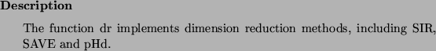

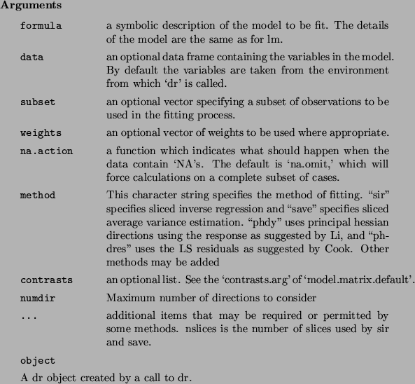
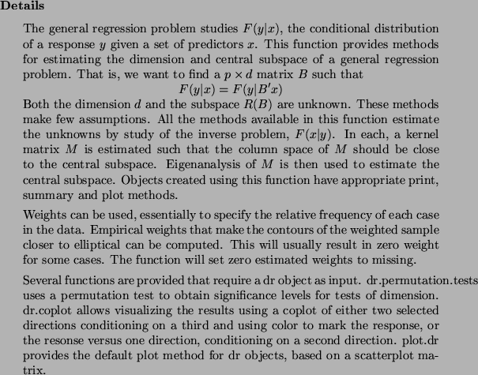
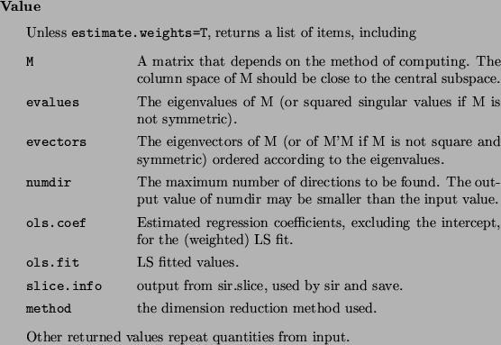


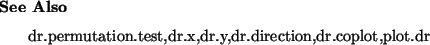
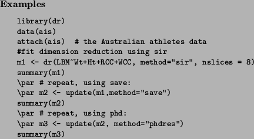
dr.permutation.testInverse Regression Permutation Tests
inverse regression, regressiondr.permutation.test
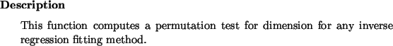
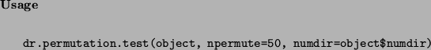
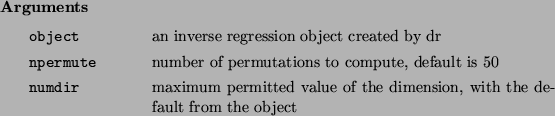
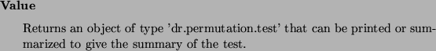
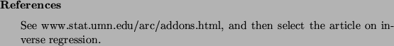
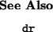
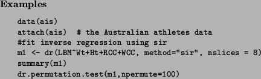
plot.drPlotting methods for dimension reduction regression
coplot.drplot.dr
dr, dimension reduction, inverse regression, graphicsplot.dr
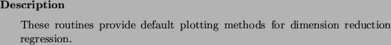
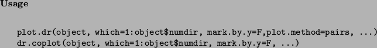
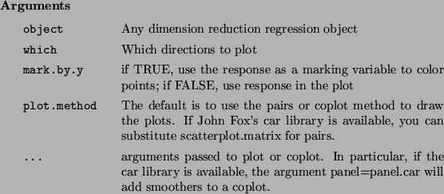
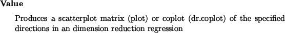

rotplotdraw many 2D projections of a 3D plot
rotplot
graphicsrotplot
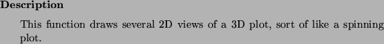
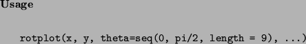
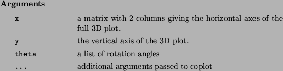
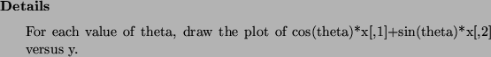
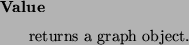
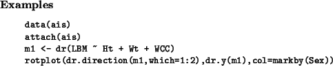
dr.xInverse regression term matrix
dr.ydr.x
dr.zdr.x
Dimension reduction regression, regressiondr.x

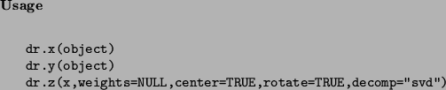
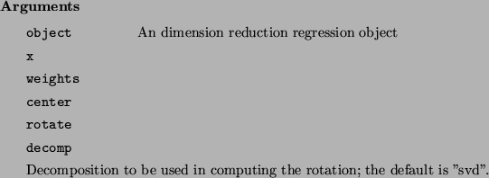
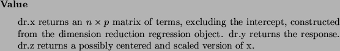
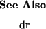
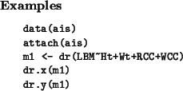
dr.estimate.weightsCompute estimated weighting toward normality
robust.center.scaledr.estimate.weights
Dimension reduction regression, robustnessdr.estimate.weights
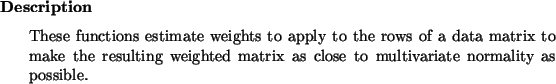
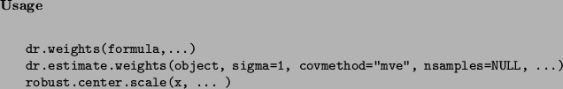
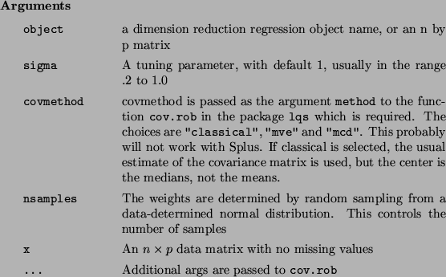
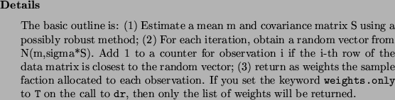
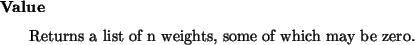
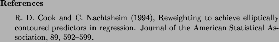
The following documentation is from the package lqs by Brian Ripley,
and is included here for convenience:
cov.robResistant Estimation of Multivariate Location and Scatter
cov.mcdcov.rob
cov.mvecov.rob
robustcov.rob
multivariatecov.rob

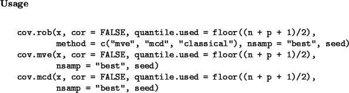
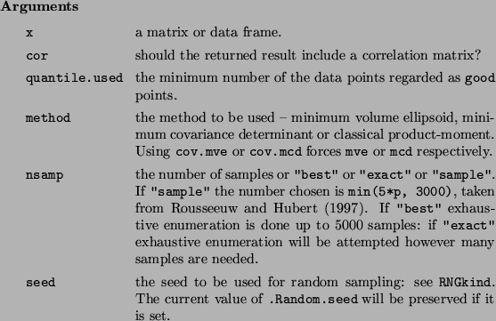
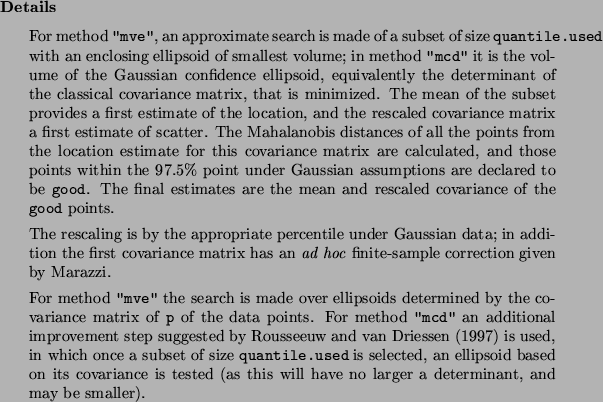
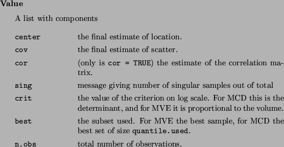
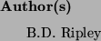
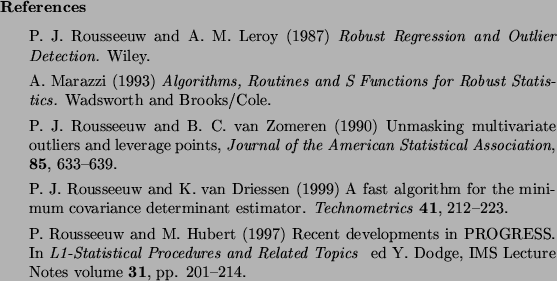
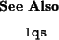
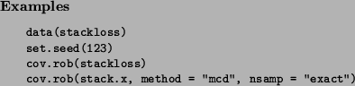
Next: About this document ...
Up: Dimension Reduction Regression in
Previous: References
Sandy Weisberg
2002-01-10